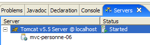

11. Application web MVC [personne] – version 6
11.1. Introduction
Dans cette version, nous apportons la modification suivante :
La version précédente n'a pas utilisé la session pour garder en mémoire des éléments entre deux échanges client / serveur. Elle a utilisé la technique des cookies, qui fait que les éléments à mémoriser sont envoyés au client par le serveur afin que celui-ci les lui renvoie lors du prochain échange. Dans cette nouvelle version, nous utilisons une technique proche, celles des champs cachés dans les formulaires. Il existe des différences entre ces deux techniques :
Cookies | Champs cachés |
- le serveur place les éléments à mémoriser dans le flux HTTP qui précède le document HTML. | - le serveur place les éléments à mémoriser dans le document HTML. |
- la technique nécessite que le navigateur accepte les cookies pour que celui-ci les renvoie au serveur lors de ses demandes GET ou POST. | - la technique nécessite que tous les appels du client au serveur soient des POST afin que les champs cachés soient envoyés au serveur. |
- l'utilisateur a accès aux éléments mémorisés en faisant afficher les cookies reçus par son navigateur. La plupart des navigateurs proposent cette option. | - l'utilisateur a accès aux éléments mémorisés en faisant afficher le code source du document HTML reçu. |
La technique des champs cachés est utilisable ici car tous les appels du client sont de type POST.
11.2. Le projet Eclipse
Pour créer le projet Eclipse [mvc-personne-06] de l'application web [/personne6], on dupliquera le projet [mvc-personne-05] en suivant la procédure décrite au paragraphe 6.2.
 |  |
11.3. Configuration de l'application web [personne6]
Le fichier web.xml de l'application /personne6 est le suivant :
<?xml version="1.0" encoding="UTF-8"?>
<web-app id="WebApp_ID" version="2.4"
xmlns="http://java.sun.com/xml/ns/j2ee"
xmlns:xsi="http://www.w3.org/2001/XMLSchema-instance"
xsi:schemaLocation="http://java.sun.com/xml/ns/j2ee http://java.sun.com/xml/ns/j2ee/web-app_2_4.xsd">
<display-name>mvc-personne-06</display-name>
...
Ce fichier est identique à celui de la version précédente hormis quelques détails :
- ligne 6 : le nom d'affichage de l'application web a changé en [mvc-personne-06]
La page d'accueil [index.jsp] est identique à celle de l'application [/personne5] :
<%@ page language="java" contentType="text/html; charset=ISO-8859-1"
pageEncoding="ISO-8859-1"%>
<%@ taglib uri="/WEB-INF/c.tld" prefix="c" %>
<c:redirect url="/do/formulaire"/>
11.4. Le code des vues
Seules les vues [réponse, erreurs] changent. Elles ont maintenant des champs cachés dans leurs formulaires respectifs alors que dans la version précédente, ces formulaires ne postaient auncun paramètre.
[réponse.jsp] :
...
<html>
...
<body>
...
<form name="frmPersonne" action="retourFormulaire" method="post">
<input type="hidden" name="nom" value="${nom}">
<input type="hidden" name="age" value="${age}">
</form>
<a href="javascript:document.frmPersonne.submit();">
${lienRetourFormulaire}
</a>
</body>
</html>
- lignes 6-9 : le formulaire qui sera posté au serveur lors du clic sur le lien des lignes 10-12
- ligne 6 : la cible du POST sera [/do/retourFormulaire]
- lignes 7-8 : les champs cachés [nom] et [age] seront postés. Leurs valeurs ${nom} et ${age} seront fixées par le contrôleur qui affichera [réponse.jsp]. Ce seront les valeurs saisies dans le formulaire.
[erreurs.jsp] :
...
<html>
...
<body>
...
<form name="frmPersonne" action="retourFormulaire" method="post">
<input type="hidden" name="nom" value="${nom}">
<input type="hidden" name="age" value="${age}">
</form>
<a href="javascript:document.frmPersonne.submit();">
${lienRetourFormulaire}
</a>
</body>
</html>
Les modifications et les explications sont les mêmes que pour la vue [réponse.jsp]. On notera que le modèle de la vue [erreurs] s'enrichit de deux nouveaux éléments [nom, age] qui viennent s'ajouter aux deux autres qui existaient déjà : [erreurs, lienRetourFormulaire].
Le lecteur est invité à tester ces nouvelles vues selon le principe vu dans les versions précédentes.
11.5. Le contrôleur [ServletPersonne]
Le contrôleur [ServletPersonne] de l'application web [/personne6] est très proche à celui de la version précédente. Les changements viennent du fait que le modèle de la vue [erreurs] a changé. Il y faut mettre deux éléments supplémentaires : [nom, age]. Seules les méthodes faisant afficher cette vue sont concernées. Il s'agit des méthodes [doGet] et [doValidationFormulaire].
11.5.1. La méthode [doGet]
Le code de [doGet] est le suivant :
En fait, ce code reste identique à ce qu'il était. Dans la version précédente, les éléments [nom, age] n'étaient pas mis dans le modèle de la vue [erreurs]. Si on continue à ne pas les y mettre, les variables ${nom} et ${age} de [erreurs.jsp] seront remplacées par la chaîne vide. Cela nous convient, car dans ce cas précis, le lien [Retour au formulaire] n'est pas présenté à l'utilisateur. En effet, nous ne mettons pas non plus l'élément [lienRetourFormulaire] dans le modèle. La variable ${lienRetourFormulaire} de [erreurs.jsp] sera remplacée par la chaîne vide. Il n'y aura donc pas de lien, donc pas possibilité de poster les champs cachés [nom, age] du formulaire de [erreurs.jsp]. La valeur de ces champs peut donc être la chaîne vide.
11.5.2. La méthode [doValidationFormulaire]
Son code est le suivant :
Lignes 8-10, on met dans le modèle les éléments [nom, age, lienRetourFormulaire]. On sait que la méthode affiche l'une des vues [réponse] ou [erreurs]. Cette dernière aura donc les éléments [nom,age] dans son modèle.
11.6. Tests
Lancer ou relancer Tomcat après y avoir intégré le projet Eclipse [personne-mvc-06] puis demander l'url [http://localhost:8080/personne6].